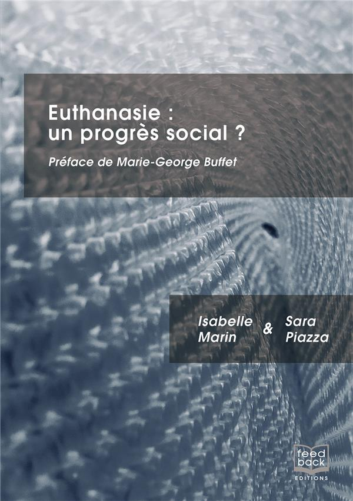
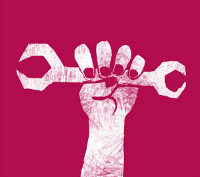
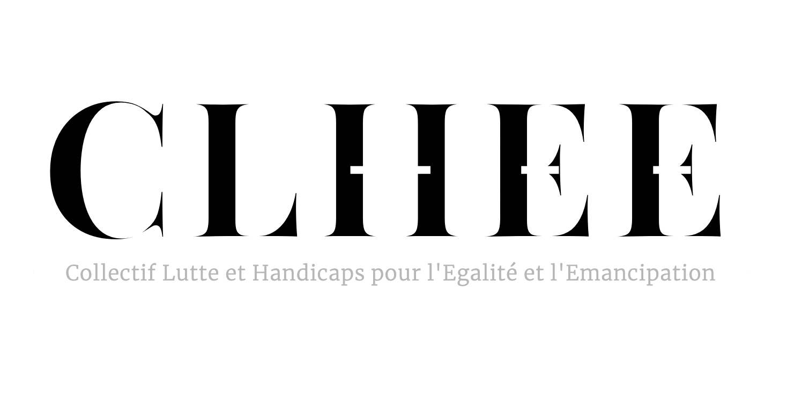
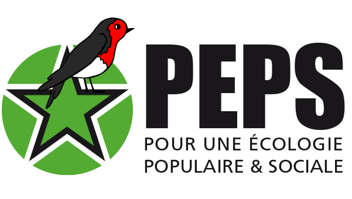

Ressources

« La loi promet un “droit à mourir” quand on n’a plus les moyens de garantir un droit à être soigné »
Par Sara Piazza - 12 mai 2025
Il est étonnant qu’une large partie de la gauche considère l’aide active à mourir comme une cause progressiste. Il s'agit surtout une manière de pallier les carences du système de santé et l'on peut craindre une logique de tri qui s’effectuerait entre les existences dignes ou non de se poursuivre.
Source : L'Humanité / Collectif JABS
Sujet : L'euthanasie n'est pas de gauche
Lire la tribune
Euthanasie : la gauche doit s’opposer à une loi validiste et antisociale
Par le Collectif JABS - 11 mai 2025
Notre tribune dans l'Humanité, où nous appellons les députés à un sursaut, à la veille des débats sur l'euthanasie en première lecture à l'Assemblée Nationale
Source : L'Humanité / Collectif JABS
Sujet : L'euthanasie n'est pas de gauche
Lire notre texte
Aide à mourir : comment comprendre les craintes des personnes handicapées ?
Par Élisa Rojas - 12 mai 2025
Les textes sur les soins palliatifs et la fin de vie seront examinés en séance publique à l'Assemblée Nationale à partir de ce lundi, et de nombreux observateurs s'inquiètent des effets de ce texte sur les personnes en situation de handicap. Comment expliquer de telles inquiétudes ?
Source : France Culture
Sujet : Euthanasie et handicap
Écouter Élisa Rojas (8 mn)L'euthanasie est-elle demandée prioritairement par les plus pauvres dans les pays qui la légalisent ?
Par le Collectif JABS - 11 mai 2025
On lit parfois qu'aucune étude ne montre la surreprésentation des pauvres dans les personnes demandant l'euthanasie en Belgique, au Canada ou en Oregon. En fait, les études sont trop rares, mais certaines, récentes, montrent plutôt l'inverse.
Source : Collectif JABS
Sujet : Euthanasie et pauvreté
Lire notre textePour ouvrir le débat sur la fin de vie, donnons la parole à Liz Carr
Par le Collectif JABS, le CLHEE et les Dévalideuses - 30 avril 2025
Des journalistes du service public louent unanimement le courage de ceux qui font le dernier voyage en Belgique. Comment expliquer l'absence d'autres voix, comme celle de Liz Carr qui a écrit Better Off Dead ?
Source : Collectif JABS
Sujet : Médias et euthanasie
Lire la tribune
Euthanasie : un progrès social ?
Par Isabelle Marin et Sara Piazza - 19 septembre 2023
Un essai qui interroge sur les enjeux éthiques et sociaux de la légalisation de l'euthanasie, notamment pour les personnes vulnérables. Les auteures examinent les implications d'une telle loi sur notre société et son impact potentiel sur les plus fragiles.
Source : Fnac
Sujet : Éthique médicale
Acheter le livre sur la Fnac
Peut-on programmer la mort ?
Par Pierre Jova - 12 octobre 2023
Une enquête approfondie sur l'euthanasie en Belgique et le suicide assisté en Suisse. Pierre Jova examine les conséquences de ces pratiques sur la société et pose des questions essentielles sur notre rapport à la fin de vie et à la dignité humaine.
Acheter le livre sur la Fnac
Les Dévalideuses
Un collectif féministe antivalidiste militant pour les droits des personnes handicapées et contre l'euthanasie.
Visiter
CLHEE
Collectif Lutte et Handicaps pour l’Égalité et l’Émancipation, œuvrant contre les discriminations liées au validisme.
VisiterVie Digne
Un lien pour regrouper des ressources et actions en faveur d'une vie digne pour toutes et tous.
VisiterTVNDY
Groupe de défense des droits des personnes en situation de handicap et militant contre l'eugénisme.
Visiter
ConfPEPS
Conférence sur les enjeux éthiques autour du droit de mourir dans la dignité et de l'eugénisme.
Visiter
Pour que la compassion change de camp
Article de La Vie
Un débat sur la fin de vie et la place de la compassion dans les décisions autour de l'euthanasie. L'article met en lumière les enjeux humains et éthiques liés à ce sujet complexe.
Lire l'article
Aide active à mourir : l'exemple canadien
Article de L'Humanité
Une analyse de l'expérience canadienne en matière d'aide active à mourir, explorant les impacts sociaux et éthiques de cette législation dans un pays proche de la France culturellement.
Lire l'article
Vidéo : Réflexion sur la fin de vie
Par YouTube
Une vidéo approfondie qui explore les différents aspects de l'aide à mourir et de la dignité humaine, en abordant les points de vue éthiques, légaux et personnels.
Regarder la vidéoAssistedLab : Aide à mourir en Suisse
Site web
Un site qui recense les œuvres médiatiques qui pèsent dans le débat politique, et met au jour une véritable fabrique du consentement à l'euthanasie
Visiter le site